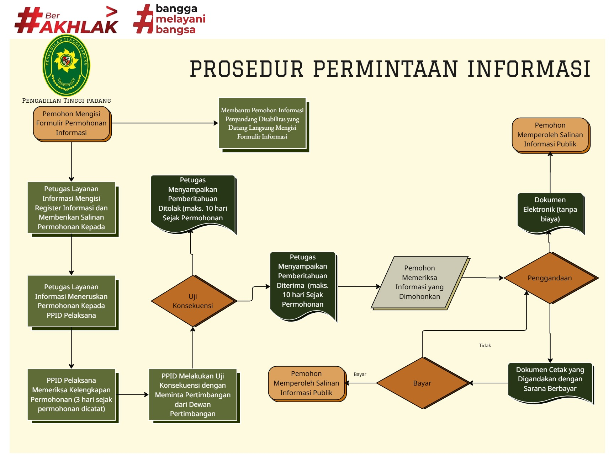

Prosedur Permohonan Informasi

Berdasarkan Surat Keputusan Ketua Mahkamah Agung Nomor: 2-144/KMA/SK/VIII/2022 tentang Standar Pelayanan Informasi Publik di Pengadilan, prosedur permintaan informasi dapat dilihat pada bagan berikut.
- Permohonan Informasi Publik diajukan secara elektronik melalui e-LID atau secara nonelektronik.
- Formulir permintaan informasi diberikan dan pengadilan memberikan salinannya kepada pemohon. (Formulir dapat diunduh pada halaman permohonan manual)
- Permohonan informasi secara nonelektronik dilakukan dengan cara:
- Pemohon datang langsung ke layanan meja informasi; atau
- Pemohon mengisi formulir permohonan Informasi dan mengirimkannya melalui surat tercatat kepada PPID
- Formulir permohonan lnformasi sebagaimana dimaksud pada angka 2 paling kurang memuat:
- nomor pendaftaran yang diisi berdasarkan nomor setelah permintaan Informasi Publik diregistrasi;
- nama lengkap orang perorangan atau badan hukum atau kuasanya;
- nomor induk kependudukan sesua1 kartu tanda penduduk atau nomor surat keputusan pengesahan badan hukum dari Kementerian Hukum dan Hak Asasi Manusia;
- alamat
- nomor telepon/pos-el;
- surat kuasa khusus dalam hal permintaan Informasi Publik dikuasakan kepada pihak lain;
- rincian Informasi yang diminta;
- tujuan penggunaan Informasi;
- cara memperoleh informasi; dan
- Permintaan Informasi Publik yang diajukan.
- Petugas Layanan Informasi mengisi register permohonan.
- Daiam hal Pemohon Informasi datang langsung dan termasuk Penyandang Disabilitas, pengisian formulir permohonan Informasi Publik dapat dibantu oleh Petugas Layanan Informasi.
- Petugas Layanan Informasi langsung meneruskan dokumen permohonan Informasi kepada PPID Pelaksana
- PPID dibantu PPID Pelaksana melakukan pemeriksaan kelengkapan permohonan Informasi Publik paling lambat 3 (tiga) hari sejak permohonan dicatat dalam register permohonan Informasi Publik
- Dalam hal permohonan dinyatakan tidak lengkap, PPID menerbitkan surat keterangan tidak lengkap untuk diberitahukan kepada Pemohon melalui Petugas Layanan Informasi secara elektronik atau nonelektronik
- Pemohon dapat menyerahkan perbaikan permohonan sebagaimana dimaksud pada angka 9 paling lambat 3 (tiga) hari sejak surat keterangan tidak lengkap diterima dan jika dalam tempo waktu tersebut Pemohon tidak menyerahkan perbaikan permohonan, Petugas Layanan Informasi atas perintah PPID memberikan catatan pada register permohonan Informasi Publik tanpa harus menindaklanjuti Permintaan Informasi Publik yang diajukan
- Dalam hal Informasi yang dimohonkan belum dinyatakan sebagai informasi yang terbuka di dalam DIP, PPID melakukan uji konsekuensi berdasarkan Pasal 17 Undang-Undang Nomor 14 Tahun 2008 tentang Keterbukaan Informasi Publik
- Dalam hal permohonan ditolak, paling lambat 10 (sepuluh) hari sejak menerima permohonan, PPID melalui Petugas Layanan Informasi menyampaikan pemberitahuan tertulis kepada Pemohon Informasi secara elektronik atau nonelektronik.
- Dalam hal permohonan diterima, PPID meminta PPID Pelaksana memperkirakan waktu dan biaya yang diperlukan untuk menggandakan Informasi yang diminta, selanjutnya paling lambat 10 (sepuluh) hari sejak menerima permohonan, PPID melalui Petugas Layanan lnformasi secara elektronik atau nonelektronik menyampaikan pemberitahuan tertulis kepada Pemohon Informasi.
- Pemberitahuan tertulis sebagaimana dimaksud pada angka 12 dan angka 13 paling kurang memuat:
- Informasi Publik yang diminta berada di bawah penguasaannya atau tidak
- Keterangan badan publik yang menguasai Informasi yang diminta dalam hal Informasi tidak berada di bawah penguasaannya
- Menerima atau menolak permintaan Informasi Publik yang disertai dengan alasan
- Bentuk Informasi Publik yang tersedia
- Biaya dan cara pembayaran untuk mendapatkan salinan Informasi Publik yang diminta
- Waktu yang dibutuhkan untuk menyediakan Informasi Publik yang diminta
- Penjelasan atas penghitaman/pengaburan Informasi yang diminta bila ada
- Permintaan Informasi Publik diberikan sebagian atau seluruhnya; dan
- Penjelasan apabila Informasi tidak dapat diberikan karena belum dikuasai atau belum didokumentasikan
- Petugas Layanan Informasi memberikan kesempatan kepada Pemohon Informasi apabila ingin melihat terlebih dahulu Informasi yang diminta, sebelum memutuskan untuk menggandakan atau tidak Informasi tersebut
- Petugas Layanan Informasi menggandakan Informasi yang diminta dan memberikan Informasi tersebut kepada Pemohon sesuai dengan waktu yang termuat dalam pemberitahuan tertulis
- Informasi diberikan kepada Pemohon Informasi dalam bentuk Dokumen Elektronik kecuali dokumen yang hanya tersedia dalam bentuk cetak
- Pengiriman Dokumen Elektronik sebagaimana dimaksud pada angka 1 7 dilakukan melalui e-LID, Pos-el Pemohon, atau menyimpan informasi tersebut ke alat penyimpanan Dokumen Elektronik yang disediakan oleh Pemohon
- Penggandaan dokumen cetak dilakukan oleh Petugas Layanan Informasi
- Pengadilan dapat memperpanjang waktu sebagaimana dimaksud pada angka 13 paling lama 7 (tujuh) hari sejak penyampaian pemberitahuan perpanjangan waktu kepada Pemohon dalam hal:
- Pengadilan belum menguasai atau mendokumentasikan Informasi Publik yang diminta
- Pengadilan belum dapat memutuskan status Informasi yang dimohonkan
- Informasi yang diminta bervolume besar; dan/ atau
- Pengadilan di wilayah tertentu yang memiliki keterbatasan untuk mengakses sarana penggandaan
- Setelah menerima Informasi Publik, Pemohon mengisi tanda terima Informasi Publik
Sumber: 2-144/KMA/SK/VIII/2022 tentang Standar Pelayanan Informasi Publik di Pengadilan